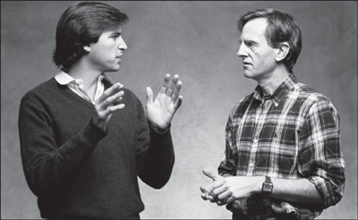

ENTER SCULLEY
The Pepsi Challenge

With John Sculley, 1984
Mike Markkula had never wanted to be Apple's president. He liked designing his new houses, flying his private plane, and living high off his stock options; he did not relish adjudicating conflict or curating high-maintenance egos. He had stepped into the role reluctantly, after he felt compelled to ease out Mike Scott, and he promised his wife the gig would be temporary. By the end of 1982, after almost two years, she gave him an order: Find a replacement right away.
Jobs knew that he was not ready to run the company himself, even though there was a part of him that wanted to try. Despite his arrogance, he could be self-aware. Markkula agreed; he told Jobs that he was still a bit too rough-edged and immature to be Apple's president. So they launched a search for someone from the outside.
The person they most wanted was Don Estridge, who had built IBM's personal computer division from scratch and launched a PC that, even though Jobs and his team disparaged it, was now outselling Apple's. Estridge had sheltered his division in Boca Raton, Florida, safely removed from the corporate mentality of Armonk, New York. Like Jobs, he was driven and inspiring, but unlike Jobs, he had the ability to allow others to think that his brilliant ideas were their own. Jobs flew to Boca Raton with the offer of a $1 million salary and a $1 million signing bonus, but Estridge turned him down. He was not the type who would jump ship to join the enemy. He also enjoyed being part of the establishment, a member of the Navy rather than a pirate. He was discomforted by Jobs's tales of ripping off the phone company. When asked where he worked, he loved to be able to answer "IBM."
So Jobs and Markkula enlisted Gerry Roche, a gregarious corporate headhunter, to find someone else. They decided not to focus on technology executives; what they needed was a consumer marketer who knew advertising and had the corporate polish that would play well on Wall Street. Roche set his sights on the hottest consumer marketing wizard of the moment, John Sculley, president of the Pepsi-Cola division of PepsiCo, whose Pepsi Challenge campaign had been an advertising and publicity triumph. When Jobs gave a talk to Stanford business students, he heard good things about Sculley, who had spoken to the class earlier. So he told Roche he would be happy to meet him.
Sculley's background was very different from Jobs's. His mother was an Upper East Side Manhattan matron who wore white gloves when she went out, and his father was a proper Wall Street lawyer. Sculley was sent off to St. Mark's School, then got his undergraduate degree from Brown and a business degree from Wharton. He had risen through the ranks at PepsiCo as an innovative marketer and advertiser, with little passion for product development or information technology.
Sculley flew to Los Angeles to spend Christmas with his two teenage children from a previous marriage. He took them to visit a computer store, where he was struck by how poorly the products were marketed. When his kids asked why he was so interested, he said he was planning to go up to Cupertino to meet Steve Jobs. They were totally blown away. They had grown up among movie stars, but to them Jobs was a true celebrity. It made Sculley take more seriously the prospect of being hired as his boss.
When he arrived at Apple headquarters, Sculley was startled by the unassuming offices and casual atmosphere. "Most people were less formally dressed than PepsiCo's maintenance staff," he noted. Over lunch Jobs picked quietly at his salad, but when Sculley declared that most executives found computers more trouble than they were worth, Jobs clicked into evangelical mode. "We want to change the way people use computers," he said.
On the flight home Sculley outlined his thoughts. The result was an eight-page memo on marketing computers to consumers and business executives. It was a bit sophomoric in parts, filled with underlined phrases, diagrams, and boxes, but it revealed his newfound enthusiasm for figuring out ways to sell something more interesting than soda. Among his recommendations: "Invest in in-store merchandizing that romances the consumer with Apple's potential to enrich their life!" He was still reluctant to leave Pepsi, but Jobs intrigued him. "I was taken by this young, impetuous genius and thought it would be fun to get to know him a little better," he recalled.
So Sculley agreed to meet again when Jobs next came to New York, which happened to be for the January 1983 Lisa introduction at the Carlyle Hotel. After the full day of press sessions, the Apple team was surprised to see an unscheduled visitor come into the suite. Jobs loosened his tie and introduced Sculley as the president of Pepsi and a potential big corporate customer. As John Couch demonstrated the Lisa, Jobs chimed in with bursts of commentary, sprinkled with his favorite words, "revolutionary" and "incredible," claiming it would change the nature of human interaction with computers.
They then headed off to the Four Seasons restaurant, a shimmering haven of elegance and power. As Jobs ate a special vegan meal, Sculley described Pepsi's marketing successes. The Pepsi Generation campaign, he said, sold not a product but a lifestyle and an optimistic outlook. "I think Apple's got a chance to create an Apple Generation." Jobs enthusiastically agreed. The Pepsi Challenge campaign, in contrast, focused on the product; it combined ads, events, and public relations to stir up buzz. The ability to turn the introduction of a new product into a moment of national excitement was, Jobs noted, what he and Regis McKenna wanted to do at Apple.
When they finished talking, it was close to midnight. "This has been one of the most exciting evenings in my whole life," Jobs said as Sculley walked him back to the Carlyle. "I can't tell you how much fun I've had." When he finally got home to Greenwich, Connecticut, that night, Sculley had trouble sleeping. Engaging with Jobs was a lot more fun than negotiating with bottlers. "It stimulated me, roused my long-held desire to be an architect of ideas," he later noted. The next morning Roche called Sculley. "I don't know what you guys did last night, but let me tell you, Steve Jobs is ecstatic," he said.
And so the courtship continued, with Sculley playing hard but not impossible to get. Jobs flew east for a visit one Saturday in February and took a limo up to Greenwich. He found Sculley's newly built mansion ostentatious, with its floor-to-ceiling windows, but he admired the three hundred-pound custom-made oak doors that were so carefully hung and balanced that they swung open with the touch of a finger. "Steve was fascinated by that because he is, as I am, a perfectionist," Sculley recalled. Thus began the somewhat unhealthy process of a star-struck Sculley perceiving in Jobs qualities that he fancied in himself.
Sculley usually drove a Cadillac, but, sensing his guest's taste, he borrowed his wife's Mercedes 450SL convertible to take Jobs to see Pepsi's 144-acre corporate headquarters, which was as lavish as Apple's was austere. To Jobs, it epitomized the difference between the feisty new digital economy and the Fortune 500 corporate establishment. A winding drive led through manicured fields and a sculpture garden (including pieces by Rodin, Moore, Calder, and Giacometti) to a concrete-and-glass building designed by Edward Durell Stone. Sculley's huge office had a Persian rug, nine windows, a small private garden, a hideaway study, and its own bathroom. When Jobs saw the corporate fitness center, he was astonished that executives had an area, with its own whirlpool, separate from that of the regular employees. "That's weird," he said. Sculley hastened to agree. "As a matter of fact, I was against it, and I go over and work out sometimes in the employees' area," he said.
Their next meeting was a few weeks later in Cupertino, when Sculley stopped on his way back from a Pepsi bottlers' convention in Hawaii. Mike Murray, the Macintosh marketing manager, took charge of preparing the team for the visit, but he was not clued in on the real agenda. "PepsiCo could end up purchasing literally thousands of Macs over the next few years," he exulted in a memo to the Macintosh staff. "During the past year, Mr. Sculley and a certain Mr. Jobs have become friends. Mr. Sculley is considered to be one of the best marketing heads in the big leagues; as such, let's give him a good time here."
Jobs wanted Sculley to share his excitement about the Macintosh. "This product means more to me than anything I've done," he said. "I want you to be the first person outside of Apple to see it." He dramatically pulled the prototype out of a vinyl bag and gave a demonstration. Sculley found Jobs as memorable as his machine. "He seemed more a showman than a businessman. Every move seemed calculated, as if it was rehearsed, to create an occasion of the moment."
Jobs had asked Hertzfeld and the gang to prepare a special screen display for Sculley's amusement. "He's really smart," Jobs said. "You wouldn't believe how smart he is." The explanation that Sculley might buy a lot of Macintoshes for Pepsi "sounded a little bit fishy to me," Hertzfeld recalled, but he and Susan Kare created a screen of Pepsi caps and cans that danced around with the Apple logo. Hertzfeld was so excited he began waving his arms around during the demo, but Sculley seemed underwhelmed. "He asked a few questions, but he didn't seem all that interested," Hertzfeld recalled. He never ended up warming to Sculley. "He was incredibly phony, a complete poseur," he later said. "He pretended to be interested in technology, but he wasn't. He was a marketing guy, and that is what marketing guys are: paid poseurs."
Matters came to a head when Jobs visited New York in March 1983 and was able to convert the courtship into a blind and blinding romance. "I really think you're the guy," Jobs said as they walked through Central Park. "I want you to come and work with me. I can learn so much from you." Jobs, who had cultivated father figures in the past, knew just how to play to Sculley's ego and insecurities. It worked. "I was smitten by him," Sculley later admitted. "Steve was one of the brightest people I'd ever met. I shared with him a passion for ideas."
Sculley, who was interested in art history, steered them toward the Metropolitan Museum for a little test of whether Jobs was really willing to learn from others. "I wanted to see how well he could take coaching in a subject where he had no background," he recalled. As they strolled through the Greek and Roman antiquities, Sculley expounded on the difference between the Archaic sculpture of the sixth century B.C. and the Periclean sculptures a century later. Jobs, who loved to pick up historical nuggets he never learned in college, seemed to soak it in. "I gained a sense that I could be a teacher to a brilliant student," Sculley recalled. Once again he indulged the conceit that they were alike: "I saw in him a mirror image of my younger self. I, too, was impatient, stubborn, arrogant, impetuous. My mind exploded with ideas, often to the exclusion of everything else. I, too, was intolerant of those who couldn't live up to my demands."
As they continued their long walk, Sculley confided that on vacations he went to the Left Bank in Paris to draw in his sketchbook; if he hadn't become a businessman, he would be an artist. Jobs replied that if he weren't working with computers, he could see himself as a poet in Paris. They continued down Broadway to Colony Records on Forty-ninth Street, where Jobs showed Sculley the music he liked, including Bob Dylan, Joan Baez, Ella Fitzgerald, and the Windham Hill jazz artists. Then they walked all the way back up to the San Remo on Central Park West and Seventy-fourth, where Jobs was planning to buy a two-story tower penthouse apartment.
The consummation occurred outside the penthouse on one of the terraces, with Sculley sticking close to the wall because he was afraid of heights. First they discussed money. "I told him I needed $1 million in salary, $1 million for a sign-up bonus," said Sculley. Jobs claimed that would be doable. "Even if I have to pay for it out of my own pocket," he said. "We'll have to solve those problems, because you're the best person I've ever met. I know you're perfect for Apple, and Apple deserves the best." He added that never before had he worked for someone he really respected, but he knew that Sculley was the person who could teach him the most. Jobs gave him his unblinking stare.
Sculley uttered one last demurral, a token suggestion that maybe they should just be friends and he could offer Jobs advice from the sidelines. "Any time you're in New York, I'd love to spend time with you." He later recounted the climactic moment: "Steve's head dropped as he stared at his feet. After a weighty, uncomfortable pause, he issued a challenge that would haunt me for days. ‘Do you want to spend the rest of your life selling sugared water, or do you want a chance to change the world?'"
Sculley felt as if he had been punched in the stomach. There was no response possible other than to acquiesce. "He had an uncanny ability to always get what he wanted, to size up a person and know exactly what to say to reach a person," Sculley recalled. "I realized for the first time in four months that I couldn't say no." The winter sun was beginning to set. They left the apartment and walked back across the park to the Carlyle.
Sculley arrived in California just in time for the May 1983 Apple management retreat at Pajaro Dunes. Even though he had left all but one of his dark suits back in Greenwich, he was still having trouble adjusting to the casual atmosphere. In the front of the meeting room, Jobs sat on the floor in the lotus position absentmindedly playing with the toes of his bare feet. Sculley tried to impose an agenda; he wanted to discuss how to differentiate their products—the Apple II, Apple III, Lisa, and Mac—and whether it made sense to organize the company around product lines or markets or functions. But the discussion descended into a free-for-all of random ideas, complaints, and debates.
At one point Jobs attacked the Lisa team for producing an unsuccessful product. "Well," someone shot back, "you haven't delivered the Macintosh! Why don't you wait until you get a product out before you start being critical?" Sculley was astonished. At Pepsi no one would have challenged the chairman like that. "Yet here, everyone began pig-piling on Steve." It reminded him of an old joke he had heard from one of the Apple ad salesmen: "What's the difference between Apple and the Boy Scouts? The Boy Scouts have adult supervision."
In the midst of the bickering, a small earthquake began to rumble the room. "Head for the beach," someone shouted. Everyone ran through the door to the water. Then someone else shouted that the previous earthquake had produced a tidal wave, so they all turned and ran the other way. "The indecision, the contradictory advice, the specter of natural disaster, only foreshadowed what was to come," Sculley later wrote.
One Saturday morning Jobs invited Sculley and his wife, Leezy, over for breakfast. He was then living in a nice but unexceptional Tudor-style home in Los Gatos with his girlfriend, Barbara Jasinski, a smart and reserved beauty who worked for Regis McKenna. Leezy had brought a pan and made vegetarian omelets. (Jobs had edged away from his strict vegan diet for the time being.) "I'm sorry I don't have much furniture," Jobs apologized. "I just haven't gotten around to it." It was one of his enduring quirks: His exacting standards of craftsmanship combined with a Spartan streak made him reluctant to buy any furnishings that he wasn't passionate about. He had a Tiffany lamp, an antique dining table, and a laser disc video attached to a Sony Trinitron, but foam cushions on the floor rather than sofas and chairs. Sculley smiled and mistakenly thought that it was similar to his own "frantic and Spartan life in a cluttered New York City apartment" early in his own career.
Jobs confided in Sculley that he believed he would die young, and therefore he needed to accomplish things quickly so that he would make his mark on Silicon Valley history. "We all have a short period of time on this earth," he told the Sculleys as they sat around the table that morning. "We probably only have the opportunity to do a few things really great and do them well. None of us has any idea how long we're going to be here, nor do I, but my feeling is I've got to accomplish a lot of these things while I'm young."
Jobs and Sculley would talk dozens of times a day in the early months of their relationship. "Steve and I became soul mates, near constant companions," Sculley said. "We tended to speak in half sentences and phrases." Jobs flattered Sculley. When he dropped by to hash something out, he would say something like "You're the only one who will understand." They would tell each other repeatedly, indeed so often that it should have been worrying, how happy they were to be with each other and working in tandem. And at every opportunity Sculley would find similarities with Jobs and point them out:
We could complete each other's sentences because we were on the same wavelength. Steve would rouse me from sleep at 2 a.m. with a phone call to chat about an idea that suddenly crossed his mind. "Hi! It's me," he'd harmlessly say to the dazed listener, totally unaware of the time. I curiously had done the same in my Pepsi days. Steve would rip apart a presentation he had to give the next morning, throwing out slides and text. So had I as I struggled to turn public speaking into an important management tool during my early days at Pepsi. As a young executive, I was always impatient to get things done and often felt I could do them better myself. So did Steve. Sometimes I felt as if I was watching Steve playing me in a movie. The similarities were uncanny, and they were behind the amazing symbiosis we developed.
This was self-delusion, and it was a recipe for disaster. Jobs began to sense it early on. "We had different ways of looking at the world, different views on people, different values," Jobs recalled. "I began to realize this a few months after he arrived. He didn't learn things very quickly, and the people he wanted to promote were usually bozos."
Yet Jobs knew that he could manipulate Sculley by encouraging his belief that they were so alike. And the more he manipulated Sculley, the more contemptuous of him he became. Canny observers in the Mac group, such as Joanna Hoffman, soon realized what was happening and knew that it would make the inevitable breakup more explosive. "Steve made Sculley feel like he was exceptional," she said. "Sculley had never felt that. Sculley became infatuated, because Steve projected on him a whole bunch of attributes that he didn't really have. When it became clear that Sculley didn't match all of these projections, Steve's distortion of reality had created an explosive situation."
The ardor eventually began to cool on Sculley's side as well. Part of his weakness in trying to manage a dysfunctional company was his desire to please other people, one of many traits that he did not share with Jobs. He was a polite person; this caused him to recoil at Jobs's rudeness to their fellow workers. "We would go to the Mac building at eleven at night," he recalled, "and they would bring him code to show. In some cases he wouldn't even look at it. He would just take it and throw it back at them. I'd say, ‘How can you turn it down?' And he would say, ‘I know they can do better.'" Sculley tried to coach him. "You've got to learn to hold things back," he told him at one point. Jobs would agree, but it was not in his nature to filter his feelings through a gauze.
Sculley began to believe that Jobs's mercurial personality and erratic treatment of people were rooted deep in his psychological makeup, perhaps the reflection of a mild bipolarity. There were big mood swings; sometimes he would be ecstatic, at other times he was depressed. At times he would launch into brutal tirades without warning, and Sculley would have to calm him down. "Twenty minutes later, I would get another call and be told to come over because Steve is losing it again," he said.
Their first substantive disagreement was over how to price the Macintosh. It had been conceived as a $1,000 machine, but Jobs's design changes had pushed up the cost so that the plan was to sell it at $1,995. However, when Jobs and Sculley began making plans for a huge launch and marketing push, Sculley decided that they needed to charge $500 more. To him, the marketing costs were like any other production cost and needed to be factored into the price. Jobs resisted, furiously. "It will destroy everything we stand for," he said. "I want to make this a revolution, not an effort to squeeze out profits." Sculley said it was a simple choice: He could have the $1,995 price or he could have the marketing budget for a big launch, but not both.
"You're not going to like this," Jobs told Hertzfeld and the other engineers, "but Sculley is insisting that we charge $2,495 for the Mac instead of $1,995." Indeed the engineers were horrified. Hertzfeld pointed out that they were designing the Mac for people like themselves, and overpricing it would be a "betrayal" of what they stood for. So Jobs promised them, "Don't worry, I'm not going to let him get away with it!" But in the end, Sculley prevailed. Even twenty-five years later Jobs seethed when recalling the decision: "It's the main reason the Macintosh sales slowed and Microsoft got to dominate the market." The decision made him feel that he was losing control of his product and company, and this was as dangerous as making a tiger feel cornered.